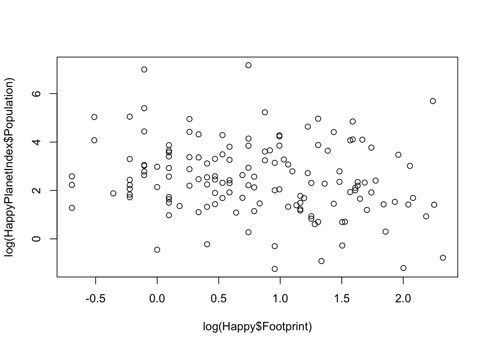
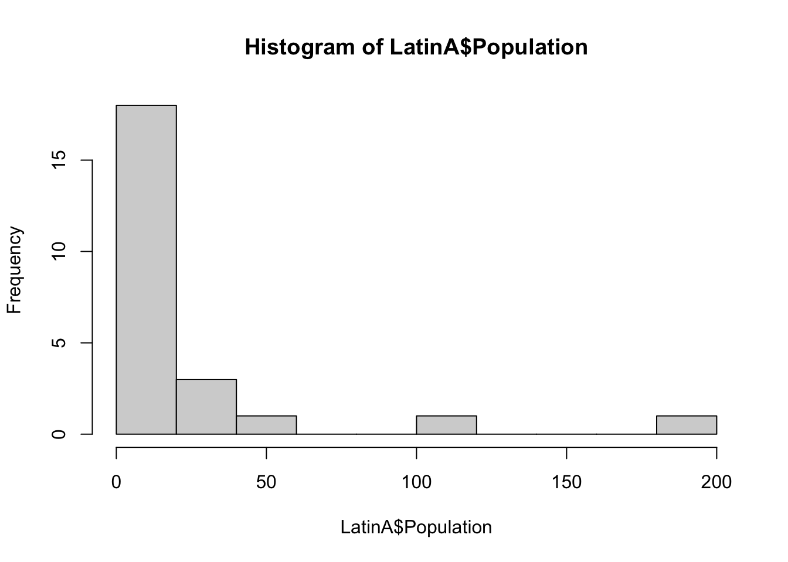
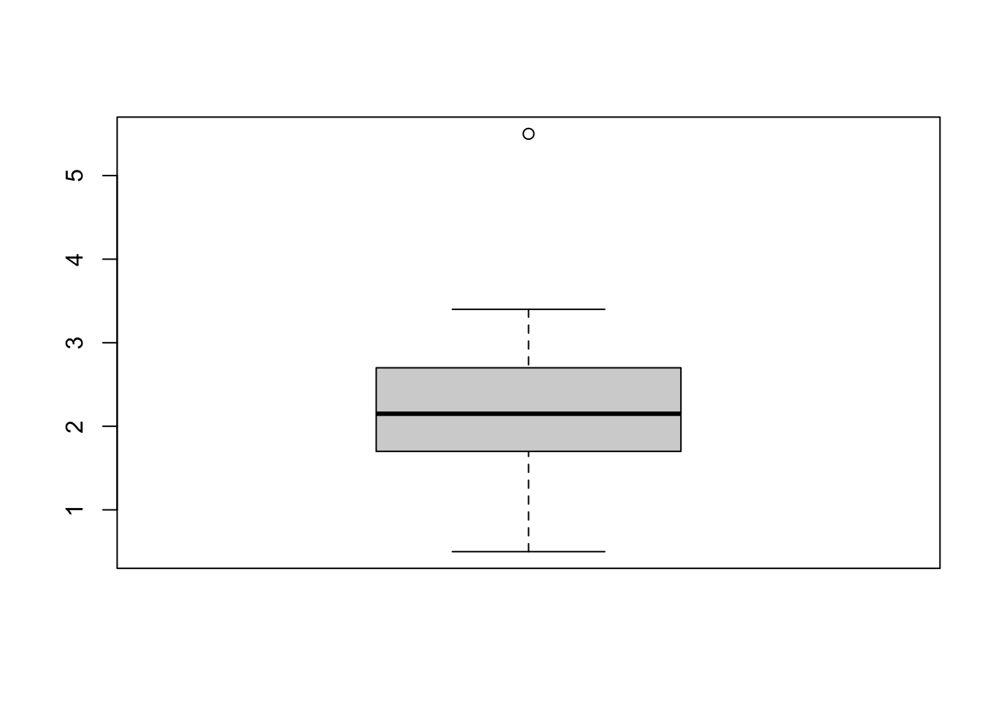

options(repos = "https://cran.rstudio.com/")install.packages(“Lock5Data”)
library(Lock5Data)
install.packges(“HappyPlanetIndex”)
data(HappyPlanetIndex)
Using Basic Graphic R to visualize data
head(HappyPlanetIndex)
install.packages("Lock5Data")
The downloaded binary packages are in
/var/folders/p9/q194gfkj0bbc7mhxdvbmvdjh0000gn/T//RtmpAIoAd4/downloaded_packageslibrary(Lock5Data)
data(HappyPlanetIndex)knitr::opts_chunk$set(echo = TRUE)
library(Lock5Data)
data("HappyPlanetIndex")#plot() #list() #bxplot()
?par() #lines() ?points() #axis() #text() #mtext() #hist() #boxplot() #legend() #persp() #names() #pie()
#plot() command
Piloting a categorical variable (country)
The result is going to be a histogram
Plotting numerical variable in this case population
Happy <- HappyPlanetIndex
Happy <- HappyPlanetIndex plot(Happy$Population)
Is going to display a scatter plot
Plotting 2x numerical variables, in this case Footprint vs population
plot(Happy$Footprint, HappyPlanetIndex$Population) 
The log function can be use. This is make the distribution more symmetric, reducing the impact of extreme values. Improving the visualization and modeling. Easier to identify patterns. It is also good to used in regression for Homoscedasticity.
plot(log(Happy$Footprint), log(HappyPlanetIndex$Population))
Assignment 2 code
plot(Happy$Population, pch=16)
# Add a text annotation
text(100, 400,
"Population (in millions)")
Important Visual Note: when using plot the first varable in plot() is the x-axis (horizontal) the second is the y-axis(vertical)
hist() command
To get an idea of the poplution of All of the Latin America Countries first: A dataframe, selection on the countries data frame “1” for Latin America Second: A sub-dataframe that contains only Latin America Countries Last: Used the hist() function to view the population distributoin of the Latin America Countries.
Latin_obs <- Happy$Region == "1"
LatinA <- Happy[Latin_obs, ]
hist(LatinA$Population)
This histogram showes that there are over 20 Latin America Countries that have a population of 50 million, less than 5 Latin America Countries have over 150 mil
by usiong the breaks comand in the his() we can get a better distribution
hist(LatinA$Population, breaks = 10)
boxplot(LatinA$Footprint)